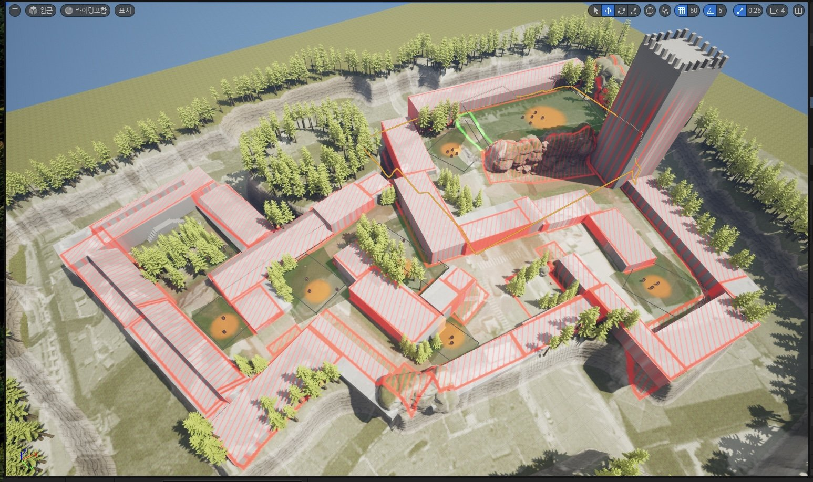
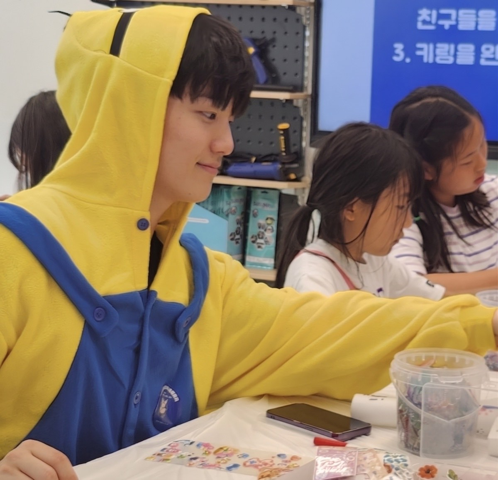
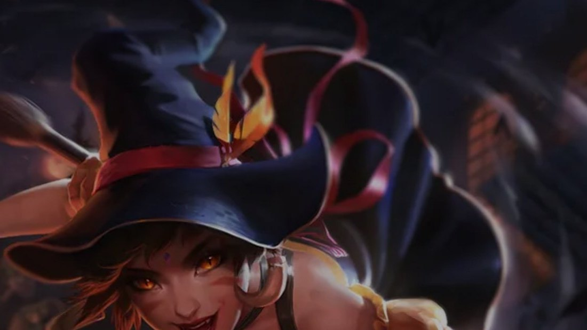

MAP 03
창작
던전 맵
영상편집 진행 중


Game Designer · 신입 기획 직군 지원
2023.10병834기 공군 전역
2026.02숭실대학교 IT글로벌미디어학부 졸업
유튜브게임 채널 / 구독자 170명 / 조회수 421,345회
블로그게임 및 IT / 이웃 464명 / 조회수 18,646
대표대외활동스마일게이트 스토브 소속 게임분석가
동아리 5 · 자격증 4 · 장학 3 — 전체 이력 아래로 ↓
Projects
레벨 디자인
제작 3D · 언리얼 [언리얼] 맵 제작 FPS 맵 2종 + RPG 맵 1종 · 모작 1 · 창작 2 역기획서 명일방주: 엔드필드 “그들은 왜 물에 수몰된 던전을 기획했을까?” 레벨 역기획 · [엔드필드] 무릉 천정원 지하리드기획 및 라이브 경험
시스템 · 콘텐츠 · 밸런스
제작 3D · Unity 서비스 종료 “동양풍을 시스템으로 번역한 공포+레이싱 게임.” 통합 리드 기획 · [졸업전시회] 여우숲 제작 2D · MSW 서비스 중 “1인 2역의 새로운 전투 문법” 통합 리드 기획 · [넥슨-메커톤] 원쁠원퀘스트
역기획서 호라이즌: 제로 던 “오픈월드 속 던전을 분석해야 했던 이유” 퀘스트 역기획 · [호라이즌 제로던] 가마솥 SIGMA캐릭터
제안서 명일방주: 엔드필드 [엔드필드] 6성 뱅가드 캐릭터 제안서 (헤스티) 스킬셋 · 리소스 계획 제안서 리그 오브 레전드 [LOL] 니달리 응용 캐릭터 제안서 신규 캐릭터 · 비선형 퀘스트2D · MapleStory Worlds
제작 서비스 중 “1인 2역의 새로운 전투 문법” 통합 리드 기획 · [넥슨-메커톤] 원쁠원3D · Unity
제작 서비스 종료 “동양풍을 시스템으로 번역한 공포+레이싱 게임.” 통합 리드 기획 · [졸업전시회] 여우숲3D · 언리얼
제작 [언리얼] 맵 제작 FPS 맵 2종 + RPG 맵 1종 · 모작 1 · 창작 2역기획서
역기획서 호라이즌: 제로 던 “오픈월드 속 던전을 분석해야 했던 이유” 퀘스트 역기획 · [호라이즌 제로던] 가마솥 SIGMA 역기획서 명일방주: 엔드필드 “그들은 왜 물에 수몰된 던전을 기획했을까?” 레벨 역기획 · [엔드필드] 무릉 천정원 지하제안서
제안서 명일방주: 엔드필드 [엔드필드] 6성 뱅가드 캐릭터 제안서 (헤스티) 스킬셋 · 리소스 계획 제안서 리그 오브 레전드 [LOL] 니달리 응용 캐릭터 제안서 신규 캐릭터 · 비선형 퀘스트Resume
Profile

Game Designer · 신입 기획 직군 지원
Game Engine — Proof by Projects
Activity — Game
Awards · Scholarship
Activity — IT Service
Activity — Extracurricular
Education · License
Reverse-engineered
남의 게임을 뜯어 문서로 복원했습니다. 퀘스트가 이야기에서 목표·동선·전투·보상으로 이어지는 구조와, 레벨이 물 하나로 공간을 잠그고 여는 구조 — 두 편을 스텝·트리거·배치 데이터까지 되살렸습니다.

퀘스트 역기획 · [호라이즌 제로던] 가마솥 SIGMA
『호라이즌 제로 던』의 퀘스트가 이야기에서 목표·동선·전투·보상으로 이어지는 구조를 스텝·트리거·배치 데이터로 복원했습니다. 진입 경로에 따라 대사가 어긋나는 문제 1건의 개선안까지.
요약본 16p + 원본 24p →
레벨 역기획 · [엔드필드] 무릉 천정원 지하
『아크나이츠: 엔드필드』의 수몰 수직 던전이 물 하나로 공간을 잠그고 여는 과정. 수위 3단 변화를 자물쇠로, 중앙 보이드를 세 가지 역할로 읽어낸 레벨 역기획입니다.
요약본 18p + 원본 36p →좋아하는 레벨이라고 후하게 재지 않았습니다 — 36페이지로 복원한 무릉에는 '실패'를, 제 졸업작품에는 '아쉬움'을 적었습니다. 세 레벨을 같은 자로 다시 잰 3장 요약입니다.
PDF 전체 보기 ↗ — 재는 법을 알면 세우는 법이 보입니다. 학습 과정: 블로그 글 ↗
Proposal
뜯어낸 문법으로 제안까지 밀어붙인 문서들. 기존 게임의 빈 자리를 실측으로 찾고, 그 자리에 들어갈 신규 캐릭터를 스킬셋·리소스 계획까지 설계했습니다.

스킬셋 · 리소스 계획
적중제안과 유사한 역할의 '카뮤'가 실제 출시됐습니다
엔드필드 열기 파티의 고점 루프가 어디서 끊기는지 실측한 뒤, 패링으로 적 공격을 파티 자원으로 바꾸는 신규 6성 뱅가드를 제안했습니다. 관찰·해석·제안의 경계를 명시했습니다.
분석 → 요구사항 → 스킬셋 → 리소스 계획 · 원본 32p →
신규 캐릭터 · 비선형 퀘스트
『리그 오브 레전드』 니달리의 서사가 스킬로 내려온 경로를 키워드 4개로 해체한 뒤, '추적'이 통하지 않는 MMORPG PVE에 맞춰 '몰이사냥꾼'으로 재정의했습니다. 그 위에 신규 캐릭터와 비선형 퀘스트까지 설계했습니다.
분석 → 아키타입 재정의 → 신규 캐릭터 · 원본 16p →Built
팀에서 실제로 만들어 서비스까지 올린 게임 2편입니다. 각 페이지는 상단 5초 스캔 블록 → 문제 정의 → 설계 의도 → 시스템·상태 명세 → 결과·회고 → 원본 문서 전문 순으로 구성했습니다.
 서비스 종료
서비스 종료
통합 리드 기획 · [졸업전시회] 여우숲
공포·레이싱·퍼즐이 따로 놀지 않도록 하나의 코어 루프로 묶고, 모든 사망 조건을 단일 타이머 규칙으로 통일한 Unity 3D 졸업작품. 총괄 기획으로 시스템·내러티브·연출·QA를 담당했습니다.
Unity 3D · 10개월 · 2인 팀 → 서비스 중
서비스 중
통합 리드 기획 · [넥슨-메커톤] 원쁠원
한 명이 두 캐릭터를 동시에 조작하는 보스전. 코드를 열지 않고 밸런싱하도록 데이터를 4표로 분리하고, 목표 TTK 3분 30초를 지표로 잡아 루프를 돌렸습니다.
MapleStory Worlds · 3주 · 5인 팀 단독 기획 →Unreal
유니티는 「여우숲」으로, MSW는 「원쁠원」으로 증명했습니다. 세 번째 엔진은 — 직접 설계하고 언리얼로 세운 맵 3종의 제작 기록으로 증명합니다 — 진행 중인 던전 맵, 현실 공간 번역, 그리고 유명 FPS 맵 모작.


도심 블록의 골목 구조를 대규모 미로형 던전 동선으로 재해석하는 세 번째 맵. 설계와 제작을 마쳤으며, 영상 편집 중입니다.

현실의 리조트 풀 정원을 교전 거리·엄폐·회전 동선이라는 FPS 문법으로 번역한 창작 맵.

잘 만든 맵을 실측하며 재현 — 엄폐 간격·시야선·동선 폭의 문법을 손으로 익힌 훈련. AI 봇 데스매치로 교전까지 검증했습니다.
최근 작업이 위에 있습니다 — 01에서 뜯어 옮기고, 02에서 그 문법으로 다시 만들어, 지금은 03에서 더 큰 던전에 도전하는 중입니다.
Analysis & Review
게임을 뜯어보는 일은 문서 밖에서도 이어집니다. 스마일게이트 스토브 크루로 쓰는 시스템 실측 리뷰 — 목록은 계속 늘어납니다.
 Stove Crew 리뷰 · 2026.06
턴제 RPG의 탈을 쓴 '리듬게임'…!?
클레르 옵스퀴르: 33 원정대
Stove Crew 리뷰 · 2026.06
턴제 RPG의 탈을 쓴 '리듬게임'…!?
클레르 옵스퀴르: 33 원정대
회피 판정 0.22초 · 패링 판정 0.15초(9프레임) · 카운터 배율 245%를 실측해, "QTE가 전투의 핵심 구조"라는 주장을 수치로 증명한 전투 시스템 리뷰.
스토브에서 읽기 ↗ Stove Crew 리뷰 · 2026.07
안생은 선택의 연속이다… 곧 다가올 미래?
디트로이트: 비컴 휴먼
Stove Crew 리뷰 · 2026.07
안생은 선택의 연속이다… 곧 다가올 미래?
디트로이트: 비컴 휴먼
분기 종착 노드 85개를 직접 세고, 단어형 선택지와 플로우차트 공개 뒤에 숨은 기획 의도 — 예산 배분과 N회차 유도 — 를 역추적한 리뷰.
스토브에서 읽기 ↗Hobby — YouTube
채널 「게임기획대학생」 — 플레이 영상 혹은 제작 프로젝트 설명 영상, 언리얼 자습 영상 등
인게임 정보성 콘텐츠
직접 플레이하며 찾아낸 동선·루트를 다른 플레이어가 그대로 쓸 수 있게 정리한 영상입니다.
포트폴리오용 영상
문서로는 전달되지 않는 실제 움직임 — 제가 만든 결과물을 직접 설명한 영상입니다.
Toolbox
숙련도는 자기평가입니다 — 실제 증명은 위의 결과물들입니다.
Elsewhere
포트폴리오에 담지 않은 학습 기록을 네이버 블로그에 기록하였고, 대학생 동안의 전체 활동은 노션에 기록하였습니다. 이 웹사이트를 만들어 온 과정은 GitHub 커밋 기록에 그대로 남아 있습니다.
Now Playing
게임을 좋아해서 시작한 일들입니다.
그리고 —
Showcase
여섯 편을 카드로 넘겨 봅니다 — 가운데 카드를 누르면 그 문서로 갑니다.